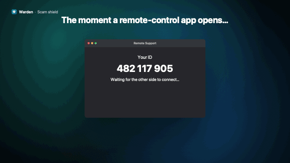
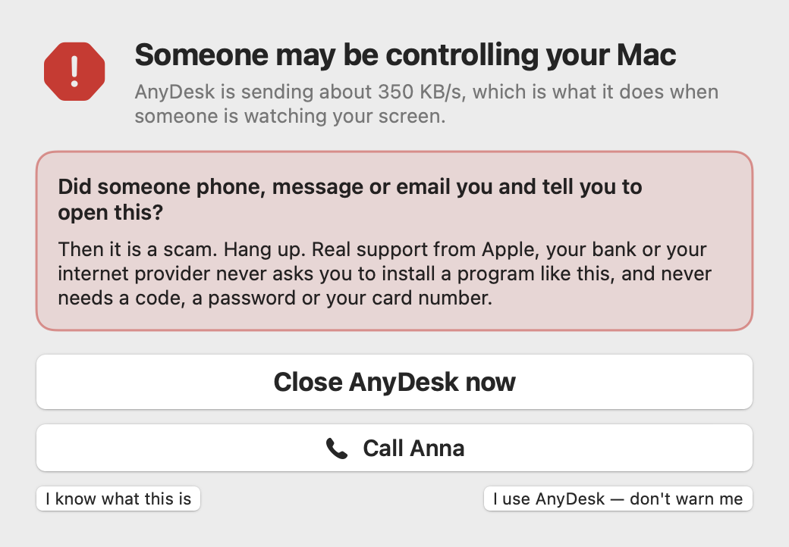
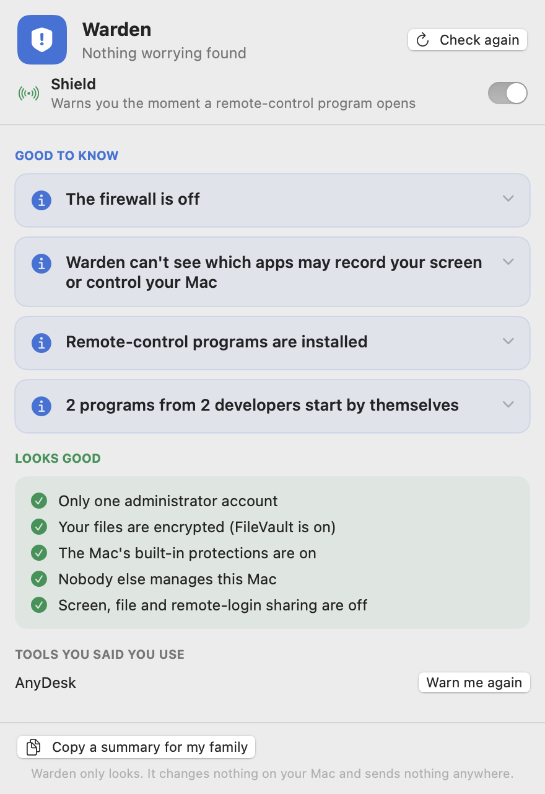
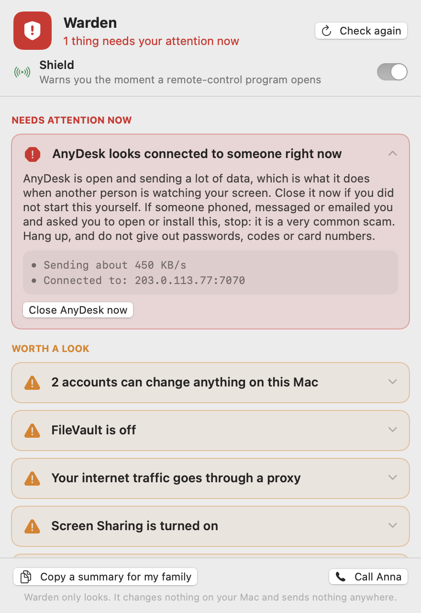

Warden Safety Check for your Mac.
Who can see or control this Mac? Warden answers in plain English, and puts up a stop sign the moment a remote-control app like AnyDesk or TeamViewer opens, the way tech-support scams begin.
brew tap priyanshugetrekt/warden https://github.com/PriyanshuGeTRekT/warden-mac-safety-check-scam-shield
brew install --cask priyanshugetrekt/warden/warden
Plain English
Every result says what it means and what to do, with the right setting one click away.
Read-only
Warden only looks. It changes nothing and needs no administrator password.
Private
No network requests, no account, no telemetry. Nothing leaves your Mac.
Free
Open source under the MIT License. No subscription, no upsell.
Scam shield
A stop sign the moment a scam tool opens.
Tech-support scams start with “install this program so I can fix your computer”. When a remote-control app opens, Warden’s warning floats above every window, with Close it now and Call your helper.
- Recognises about 20 tools: AnyDesk, TeamViewer, RustDesk, ScreenConnect, Splashtop and more.
- Escalates when the tool starts streaming your screen.
- “I use this one” for tools you really use.

Safety Check
Who can see or control this Mac?
One screen covers remote-control apps, screen and file sharing, remote login, device management, FileVault, Gatekeeper, the firewall, proxies, startup items, permissions and extra admin accounts.
- Honest severities: needs attention now, worth a look, good to know.
- The right System Settings pane one click away.
- Says plainly what it couldn't check, and why.

Plain English
Says what it found, and what to do.
Each finding explains what it means for you, shows the evidence, and offers the fix. Copy a summary to send to whoever helps you with your computer.
- Evidence: app names, install dates, ports, data rates.
- Close a remote-control app right from the finding.
- A summary in plain text for your family.

Command line
In Terminal too.
warden audit prints the same Safety Check, with an exit code for scripts and --json output. warden watch runs the shield in a terminal.
warden tools,close,trust,summary.- Exit code 0 fine, 1 worth a look, 2 needs attention now.
- Useful for IT people checking a family member’s Mac.
$ warden audit
Warden — Safety Check
2 things are worth a look
▲ A remote-control program was installed recently
• AnyDesk — installed 2 days ago
▲ Your internet traffic goes through a proxy
✓ Your files are encrypted (FileVault is on)
✓ Nobody else manages this MacUp and running in a minute.
Requires macOS 14 or later on a Mac with Apple silicon.
-
Download
Download Warden.zip, unzip it and drag Warden.app into your Applications folder.
Or install it with Homebrew:
brew install --cask priyanshugetrekt/warden/wardenRun the
brew tapcommand shown at the top of the page first. -
Open Anyway
Warden is not notarized by Apple, so macOS blocks the first launch. Open System Settings › Privacy & Security, scroll down and click Open Anyway next to Warden.
You only need to do this once.
-
Get started
To include which apps may record the screen or control the Mac in the Safety Check, allow Warden in System Settings › Privacy & Security › Full Disk Access. Everything else works without any permission.
Prefer to build it yourself? Build from source with just the Command Line Tools.
Questions and answers.
How do I know if someone is remotely accessing my Mac?
Run Warden. Its Safety Check looks for remote-control apps that are installed or open, screen sharing and remote login, extra administrator accounts and sign-ins from other computers. Its shield warns you the moment a remote-control app opens.
Is AnyDesk or TeamViewer on my Mac dangerous?
Not by itself: companies use them for IT support. But they are exactly what tech-support scammers ask people to install. If you didn’t install one yourself, or someone on the phone told you to, remove it.
Someone phoned me and asked me to install a program. What do I do?
Hang up. Real support from Apple, your bank or your internet provider never asks you to install a remote-control program or to read out a code, password or card number. Call someone you trust instead.
Is there a Safety Check for Mac like on iPhone?
Not built in. Warden is a free Safety Check for the Mac: who can see or control it, explained in plain English.
Does Warden need my password or send data anywhere?
No. Warden only reads, needs no administrator password, and makes no network requests at all.
Why does macOS say Warden cannot be opened?
Warden is not notarized by Apple, so macOS blocks the first launch. Open System Settings › Privacy & Security, scroll down and click Open Anyway next to Warden. You only need to do this once.
Is Warden antivirus?
No. It looks for remote-control tools and the common signs of tampering. It doesn’t scan files for malware.
Get Warden. It’s free.
Version 1.0.0 · macOS 14 or later · Apple silicon